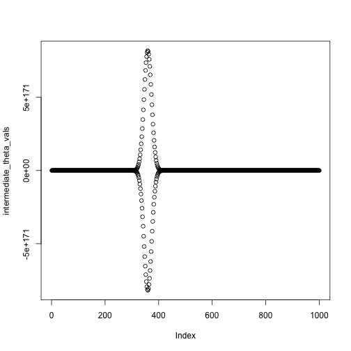
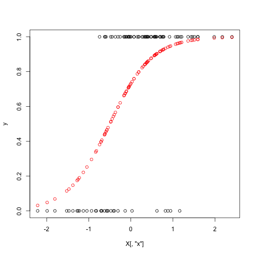
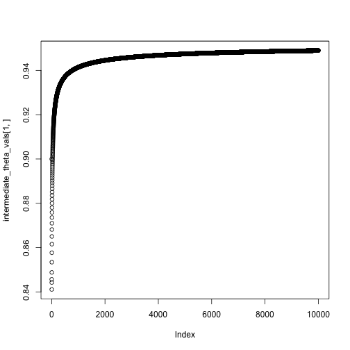
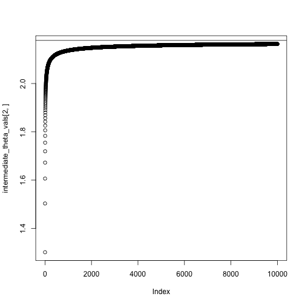
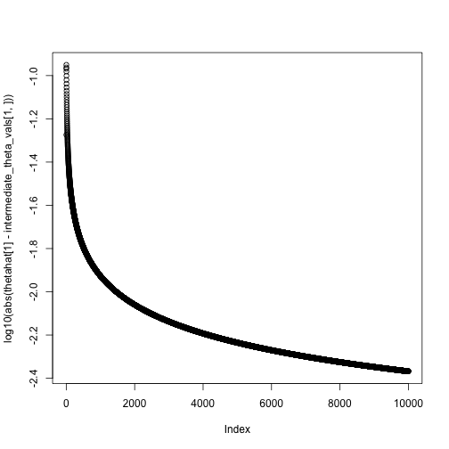
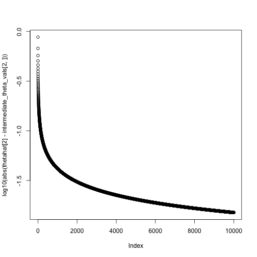

At the starting values:
library(NISTnls)
data(Ratkowsky3)
x = Ratkowsky3$x
y = Ratkowsky3$y
theta = c(-5, 1, 700)
xgrid = seq(0, 15, length.out = 1000)
fitted = nonlin_function(xgrid, theta)
plot(fitted ~ xgrid, type = 'l')
points(y ~ x)
Today: modifications of Newton’s method
Reading:
Idea: Use the expected information, \(I(\theta)= E[-d^2 \ell(\theta)]\) instead of the observed information, \(d^2 \ell(\theta)\).
Algorithm:
\(I(\theta)\) often coincides with \(-d^2 \ell(\theta)\), in which case Fisher Scoring is exactly the same as Newton’s method.
Sometimes \(I(\theta)\) is easier to compute than \(-d^2 \ell(\theta)\).
Inputs:
Model: \[ y_i \sim N(\mu_i(\theta), \sigma^2) \]
Log likelihood: \[ \ell(\theta) = - \frac{1}{2} \sum_{i=1}^n (y_i - \mu_i(\theta))^2 + C \]
Gradient/score: \[ \begin{align*} d\ell(\theta) &= \sum_{i=1}^n (y_i - \mu_i(\theta)) d\mu_i(\theta)\\ d\mu_i(\theta) &= \begin{pmatrix} \frac{\theta_3 e^{-\theta_1 - \theta_2 x}}{(1 + e^{-\theta_1 - \theta_2 x})^2} \\ \frac{x\theta_3 e^{-\theta_1 - \theta_2 x}}{(1 + e^{-\theta_1 - \theta_2 x})^2} \\ \frac{1}{(1 + e^{-\theta_1 - \theta_2 x})^2} \end{pmatrix} \end{align*} \]
Hessian: \[ d^2 \ell(\theta) = -\sum_{i=1}^n d \mu_i(\theta) d \mu_i(\theta)^T + \sum_{i=1}^n (y_i - \mu_i(\theta))d^2 \mu_i(\theta) \]
Information: \[ I(\theta) = E[-d^2 \ell(\theta)] = \sum_{i=1}^n d\mu_i(\theta) d\mu_i(\theta)^T \]
Example
fisher_scoring_iterate = function(x, y, theta_current) {
score = compute_score(x, y, theta_current)
information = compute_information(x, theta_current)
theta_new = theta_current + solve(information) %*% score
}
compute_score = function(x, y, theta) {
fitted = nonlin_function(x, theta)
grad_mu = compute_grad_mu(x, theta)
rowSums(sweep(grad_mu, 2, STATS = y - fitted, FUN = "*"))
}
compute_information = function(x, theta) {
## a 3 x n matrix
grad_mu = compute_grad_mu(x, theta)
grad_mu %*% t(grad_mu)
}
compute_grad_mu = function(x, theta) {
denom = 1 + exp(-theta[1] - theta[2] * x)
g1 = theta[3] * exp(-theta[1] - theta[2] * x) / denom^2
g2 = x * theta[3] * exp(-theta[1] - theta[2] * x) / denom^2
g3 = 1 / denom
return(rbind(g1, g2, g3))
}
nonlin_function = function(x, theta) {
theta[3] / (1 + exp(-theta[1] - theta[2] * x))
}At the starting values:
library(NISTnls)
data(Ratkowsky3)
x = Ratkowsky3$x
y = Ratkowsky3$y
theta = c(-5, 1, 700)
xgrid = seq(0, 15, length.out = 1000)
fitted = nonlin_function(xgrid, theta)
plot(fitted ~ xgrid, type = 'l')
points(y ~ x)
After one iteration:
## [,1]
## g1 -3.3298463
## g2 0.4649027
## g3 677.8340519
After two iterations:
## [,1]
## g1 -4.2780124
## g2 0.6775608
## g3 664.2494602
After several more iterations
## [,1]
## g1 -4.438590
## g2 0.687286
## g3 702.939738
## [,1]
## g1 -4.4435690
## g2 0.6887401
## g3 702.8457366
## [,1]
## g1 -4.4424684
## g2 0.6885486
## g3 702.8741477
## [,1]
## g1 -4.4425736
## g2 0.6885677
## g3 702.8711538
## [,1]
## g1 -4.4425628
## g2 0.6885657
## g3 702.8714589Compare with
nls(y ~ b3 / ((1+exp(-b1-b2*x))), data = Ratkowsky3,
start = c(b1 = -5, b2 = 0.75, b3 = 700),
trace = TRUE)## 12935.59 (6.67e-01): par = (-5 0.75 700)
## 8971.367 (7.04e-02): par = (-4.363867 0.6765795 703.9695)
## 8930.131 (5.51e-03): par = (-4.447056 0.6894499 702.678)
## 8929.885 (5.50e-04): par = (-4.442017 0.6884684 702.8859)
## 8929.883 (5.62e-05): par = (-4.442618 0.6885758 702.8699)
## 8929.883 (5.78e-06): par = (-4.442558 0.6885649 702.8716)## Nonlinear regression model
## model: y ~ b3/((1 + exp(-b1 - b2 * x)))
## data: Ratkowsky3
## b1 b2 b3
## -4.4426 0.6886 702.8716
## residual sum-of-squares: 8930
##
## Number of iterations to convergence: 5
## Achieved convergence tolerance: 5.777e-06Idea: If you don’t move very far in one step, the Hessian shouldn’t change that much either.
Instead of recomputing the Hessian at each step, compute an approximate update.
\(A^{(n)}\) are approximations to the Hessian.
Idea behind Hessian update: Taylor series again:
\[ d\ell(\theta^{(n)}) \approx d\ell(\theta^{(n+1)}) + d^2 \ell(\theta^{(n+1)})(\theta^{(n)} - \theta^{(n+1)}) \]
Rearranging: \[ d\ell(\theta^{(n)}) - d\ell(\theta^{(n+1)})\approx d^2 \ell(\theta^{(n+1)})(\theta^{(n)} - \theta^{(n+1)}) \]
Finding an approximation \(A^{(n+1)}\) of \(-d^2\ell(\theta^{(n+1)})\) that satisfies the equation above is called the secant condition.
Several different ways to make the approximation:
For notation, let \[ \begin{align*} g^{(n)} &= d\ell(\theta^{(n)}) - d \ell(\theta^{(n+1)}) \\ s^{(n)} &= \theta^{(n)} - \theta^{(n+1)} \end{align*} \]
We can rewrite the secant condition \[ d\ell(\theta^{(n)}) - d\ell(\theta^{(n+1)})\approx d^2 \ell(\theta^{(n+1)})(\theta^{(n)} - \theta^{(n+1)}) \] as \[ -A^{(n+1)} s^{(n)} = g^{(n)} \]
Davidon’s method is a symmetric rank-1 update.
\[ A^{(n+1)} = A^{(n)} - c^{(n)} v^{(n)} (v^{(n)})^T \]
where \[ c^{(n)} = \frac{1}{(g^{(n)} + A^{(n)} s^{(n)})^T s^{(n)}} \]
\[ v^{(n)} = g^{(n)} + A^{(n)} s^{(n)} \]
(verify on your own that this satisfies the secant condition)
BFGS is a symmetric rank-2 update.
\[ A^{(n+1)} = A^{(n)} + \alpha u u^T + \beta v v^T \]
\(u = y^{(k)}\), \(v = A^{(n)} s^{(n)}\), \(\alpha = -1 / (g^{(k)})^T s^{(k)}\), \(\beta = - 1 / (s^{(k)})^T B^{(k)} s^{(k)}\)
BFGS is in R’s optim.
The rank-1 updating method doesn’t ensure that the approximate Hessian remains positive definite, while the rank-2 updating method (BFGS) does.
Why are these useful?
\[ (A + UCV)^{-1}= A^{-1} - A^{-1} U(C^{-1} + VA^{-1} U)^{-1} V A^{-1} \]
Our problem:
\[ \text{minimize}_x \quad f(x) \]
Note that we’re doing minimization instead of maximization now so that the notation matches the reading, but any minimization problem can be recast as a maximization and vice versa.
General algorithm:
Start with a point \(x\)
Repeat
Until the stopping criterion is satisfied, usually \(\|\nabla f(x)\|_2 \le \epsilon\).
In gradient descent, we take \(\Delta x = - \nabla f(x)\).
Overall algorithm:
Start with a point \(x\)
Repeat
Until the stopping criterion is satisfied, usually \(\|\nabla f(x)\|_2 \le \epsilon\).
A lot of options, grouped into deterministic and adaptive.
Deterministic methods:
Adaptive methods:

Iterates of gradient descent with backtracking line search, for minimizing \(f(x_1, x_2) = \exp(x_1 + 3 x_2 - .1) + \exp(x_1 - 3 x_2 - .1) + \exp(-x_1 - .1)\)
Contours represent the boundaries of the sublevel sets of the function: \(\{x : f(x) \le a\}\).
Suppose \(x_1, \ldots, x_n \sim N(\theta, 1)\).
We want to know \(\theta\), and we will get \(\hat \theta\) by minimizing the negative log likelihood: \[ -\ell(\theta) = C + \frac{1}{2} \sum_{i=1}^n (x_i - \theta)^2 \]
A descent direction for the negative log likelihood is the negative derivative of the negative log likelihood: \[ -d(-\ell(\theta)) = \sum_{i=1}^n (x_i - \theta) \]
Functions for the log likelihood:
## [1] 4.998221theta = 0
niter = 1000
intermediate_theta_vals = numeric(niter)
for(i in 1:niter) {
theta = theta + step_size(i, eta0 = 1, tau = 40) * neg_deriv(theta, x)
intermediate_theta_vals[i] = theta
#cat(sprintf("Value of theta at iteration %i: %.2f\n", i, theta))
}
theta## [1] 4.998221
Set up the data the same way as last time:
set.seed(1)
theta_true = c(1,2)
n = 100
X = cbind(rep(1, n), rnorm(n, mean = 0, sd = 1))
colnames(X) = c("Intercept", "x")
p = exp(X %*% theta_true) / (1 + exp(X %*% theta_true))
y = rbinom(n = n, size = 1, prob = p)
plot(y ~ X[,"x"])
points(p ~ X[,"x"], col = "red")
Set up the gradient function (minimizing the negative log likelihood, need the negative gradient of the negative log likelihood or the gradient of the log likelihood):
Do our gradient calculations:
theta = c(0,0)
niter = 10000
intermediate_theta_vals = matrix(0, nrow = 2, ncol = niter)
for(i in 1:niter) {
theta = theta + step_size(i, eta0 = .1, tau = 1) * neg_gradient(theta, X, y)
intermediate_theta_vals[,i] = theta
#cat(sprintf("Value of theta at iteration %i: %.2f\n", i, theta))
}
theta## [,1]
## Intercept 0.9489461
## x 2.1634107## XIntercept Xx
## 0.9532323 2.1784561


